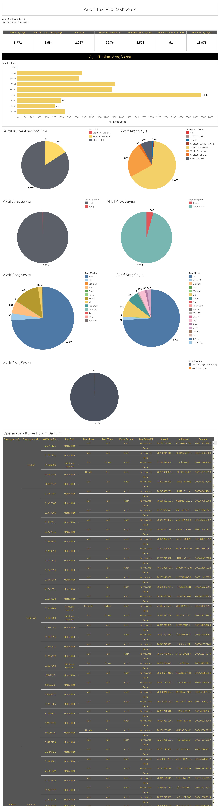

Canlı Rapora Erişin
Güncel filo operasyon verilerini Tableau üzerinde interaktif olarak görüntüleyin.
Dashboard Hakkında
Ne Gösterir?
PT - Filo Dashboard, Paket Taxi'nin tüm kurye filosuna ait aktif/pasif durumları, araç tipi dağılımını ve kurye yoğunluğunu operasyon şehri bazında harita üzerinde gösterir. Yönetimsel takip ve filo optimizasyonu için kullanılır.
- Filo Özet KPI'ları: Kurye sayısı (aktif, bekleme, aktif pasif vb.), kurye dönüşüm oranı ve zimmetli olmayan aktif kurye sayısı
- Giriş / Çıkış Kurye Sayısı Grafiği: Günlük kurye giriş ve çıkış hareketleri
- Net Kurye Sayısı Kümüle: Aylık kümülatif net kurye değişimi
- Kurye Durum Dağılımı: Beklemede, Aktif, Operasyon Bekliyenler kategorileri
- Aktif Kurye Araç Dağılımı: Motosiklet, Minivan Panelvan, Bisiklet vb. araç tiplerine göre dağılım
- Operasyon / Kurye Durum Dağılımı: Operasyon ve araç tipi bazlı aktif/bekleme/pasif kurye matrisi
- Tecrübe Dağılımı: Kuryelerin ortalama tecrübe süresine göre dağılımı
- Kurye Yoğunluk Haritası: Operasyon şehrine göre kurye yoğunluğu
- Şef Kurye Takip: Şef bazlı kurye sayısı, ayrılan kurye oranı ve aylık kurye değişimi
Dashboard Önizleme

PT - Filo Dashboard — Tableau